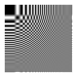

JPEG
(以下JPGと略す。)
デジカメの画像は普通これ。お絵かき掲示板で込み入った絵を描いたときもこれ。多分世の中で一番出回っている形式だと思います。
それゆえ何も考えずにJPG保存する人が後を絶ちません。恐らく一般人の認識は「JPGはサイズが小さいが劣化が激しい」くらいでしょう。
まあ間違ってもいないんですが。
でもJPGでもサイズが大きいこともあるし、劣化をなるべくさせない方法もあるんです。
それを教える前にまずはJPGがどんなものかを説明しましょう。
JPGとは
JPGは、自然画像を効率的に圧縮するために考え出された形式です。
画像を波として表現して、色が連続的に変わっていく画像を効率的に圧縮します
JPGでは画像を8×8のブロックに分けて、そのブロックごとに画像を波の重ねあわせとして見て、その波をつぎの64種類の基本波形に分解します。

重ね合わせの例を模式的に表すと、
例えばこのようになる。
おまけ。上の64個のブロックを折り返して2つづつ並べるとこんなのができる。ニュートンリング風。

つづく…
覚え書き
jpg繰り返し保存
indexカラーからjpg
└グレースケール256からjpg、からgif
フルカラーjpgとグレイスケールjpgのサイズ
色にじみとサブサンプリング
サイズとぼかし
枠